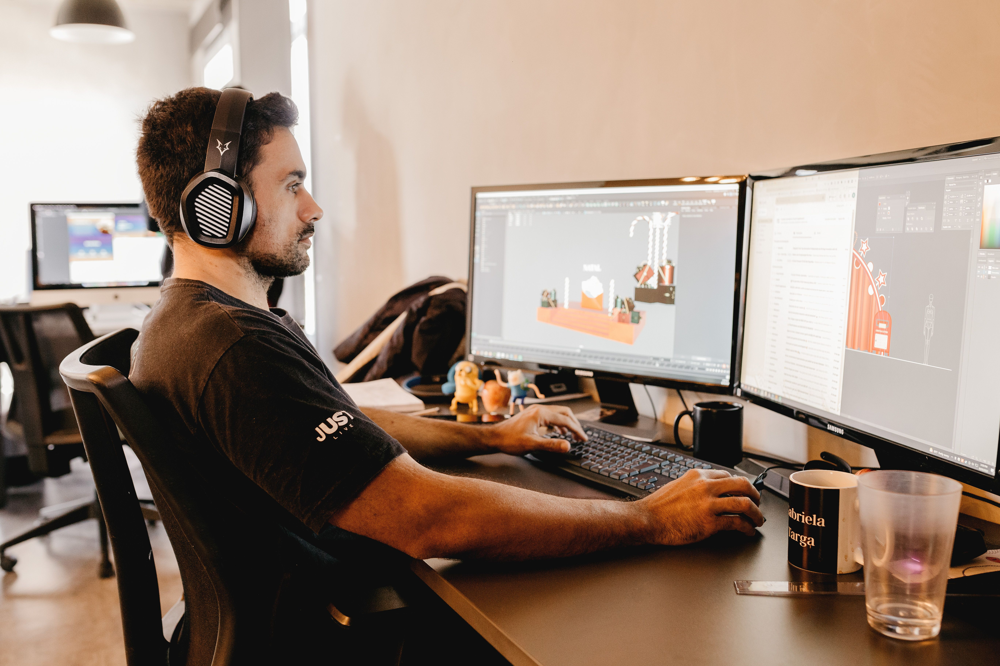
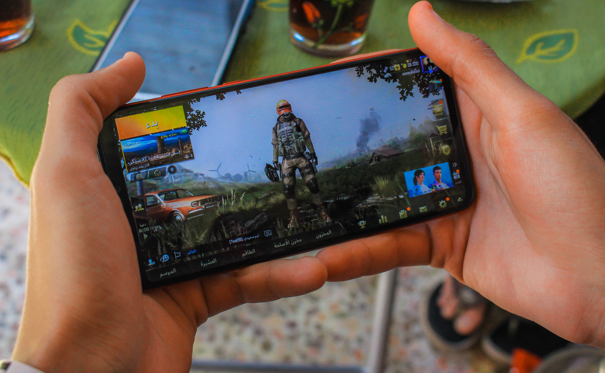

Hello! My name is Rhaine Richel Solis, and I am a student at Illinois Institute of Technology pursuing a Bachelor of Science in Game Design and Experiential Media. I am interested in combining creativity, storytelling, and technology to create engaging experiences.
I enjoy developing stories, designing environments, and thinking about how people interact with games. I am interested in how visual design and narrative can work together to make a game memorable. Through my coursework and projects, I am learning more about programming, game mechanics, and interactive experiences.

I have experience working in customer service at Jollibee and Starbucks. These jobs have helped me develop communication, teamwork, and problem-solving skills. I have also worked on a collaborative educational game project for the Chicago Maritime Museum called Outrun the Currents.

My goal is to continue improving my skills in game development, narrative design, and digital art. I want to create games that combine interesting stories with engaging gameplay and thoughtfully designed environments.
Visit my LinkedIn profile to learn more about my education and experience.
Thank you for visiting my website!